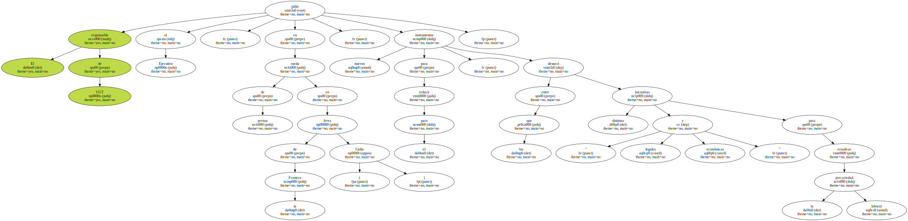

Méndez , que precisó que estas cifras revelan una caída del paro menor a la registrada en los últimos cinco años , destacó que pese a que el crecimiento económico continúa al alza , la creación de empleo está perdiendo " fuelle " , por lo que pidió al Gobierno la " intensificación " de la creación de más puestos de trabajo.

El responsable de UGT pidió al Ejecutivo , en rueda de prensa en Jerez de la Frontera ( Cádiz ) , nuevos instrumentos para reducir el paro , entre los que destacó distintas iniciativas " legales y económicas " para erradicar la precariedad laboral.
